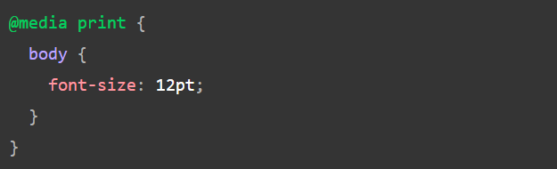
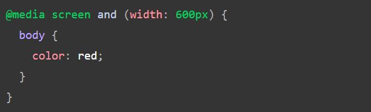
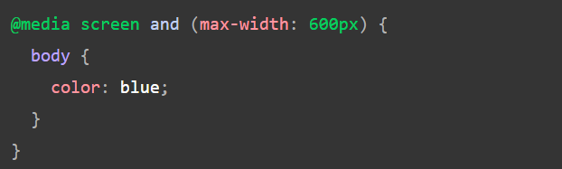
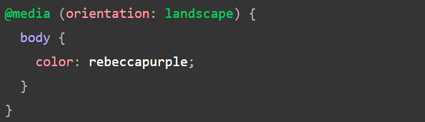
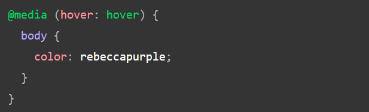

O CSS Media Query provê uma maneira de aplicar CSS somente quando o contexto do navegador e do dispositivo corresponde a uma regra especificada, por exemplo, "a janela de visualização é maior que 480 pixels". As consultas de mídia são uma parte essencial do web design responsivo, pois permitem criar layouts diferentes com base no tamanho da janela de visualização, mas também podem ser colocadas para detetar outros elementos relacionados ao ambiente em que seu site está sendo executado, por exemplo, se o usuário usar uma tela sensível ao toque em vez de um mouse. Nesta lição, você primeiro aprenderá a sintaxe usada em consultas de mídia e, em seguida, passará a usá-las em um exemplo do mundo real que mostra como um layout simples pode ser responsivo.
A sintaxe de consulta de mídia mais simples é assim:
Isso consiste em:
Os possíveis tipos de mídia que você pode especificar são:
A consulta de mídia a seguir só definirá o corpo para 12pt se a página for impressa. Não se aplicará quando a página for carregada em um navegador.

Depois de especificar o tipo, você pode direcionar um recurso de mídia com uma regra.
O recurso que tendemos a detectar com mais frequência para criar designs responsivos (e que tem amplo
suporte ao navegador) é a largura da janela de visualização, e podemos aplicar CSS se a janela de
visualização estiver acima ou abaixo de uma certa largura - ou uma largura exata - usando o min-width,
max-width e width recursos de mídia.
Esses recursos são usados para criar layouts que respondem a diferentes tamanhos de tela. Por exemplo,
para alterar a cor do texto do corpo para vermelho se a janela de visualização tiver exatamente 600
pixels, você usaria a consulta de mídia a seguir.

Os recursos de mídia width(e height) podem ser usados como intervalos e, portanto, ser prefixados com
min-ou max-para indicar que o valor fornecido é mínimo ou máximo. Por exemplo, para tornar a cor azul se
a janela de visualização for de 600 pixels ou mais estreita, use max-width:

Na prática, usar valores mínimos ou máximos é muito mais útil para design responsivo, portanto você
raramente verá widthou usará heightsozinho.
Há vários outros recursos de mídia que você pode testar, embora alguns dos recursos mais recentes
introduzidos nos níveis 4 e 5 da especificação de consultas de mídia tenham suporte limitado ao
navegador.
Um recurso de mídia bem suportado é o orientation, que nos permite testar o modo retrato ou paisagem.
Para alterar a cor do texto do corpo se o dispositivo estiver na orientação paisagem, use a consulta de
mídia a seguir.

Uma visualização de área de trabalho padrão tem uma orientação de paisagem e um design que funciona bem
nessa orientação pode não funcionar tão bem quando visualizado em um telefone ou tablet no modo retrato.
O teste de orientação pode ajudá-lo a criar um layout otimizado para dispositivos no modo retrato.
Como parte da especificação do Nível 4, o hoverrecurso de mídia foi introduzido. Esse recurso significa
que você pode testar se o usuário tem a capacidade de passar o mouse sobre um elemento, o que significa
essencialmente que ele está usando algum tipo de dispositivo apontador; a navegação pela tela sensível
ao toque e pelo teclado não paira.

Se soubermos que o usuário não pode passar o mouse, podemos exibir alguns recursos interativos por
padrão. Para usuários que podem passar o mouse, podemos optar por disponibilizá-los quando um link é
posicionado sobre o cursor.
Também no Nível 4 está o pointerrecurso de mídia. Isso leva três valores possíveis, none, finee coarse.
Um fineponteiro é algo como um mouse ou trackpad. Ele permite que o usuário alveje com precisão uma
pequena área. Um coarseponteiro é o seu dedo em uma tela sensível ao toque. O valor nonesignifica que o
usuário não possui dispositivo apontador; talvez eles estejam navegando apenas com o teclado ou com
comandos de voz.